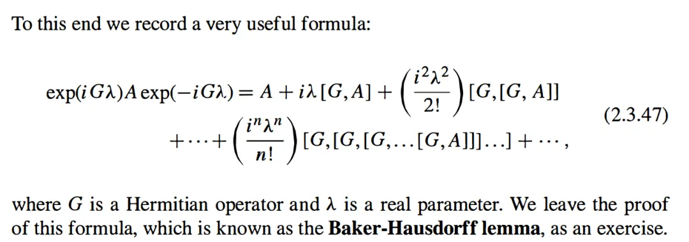
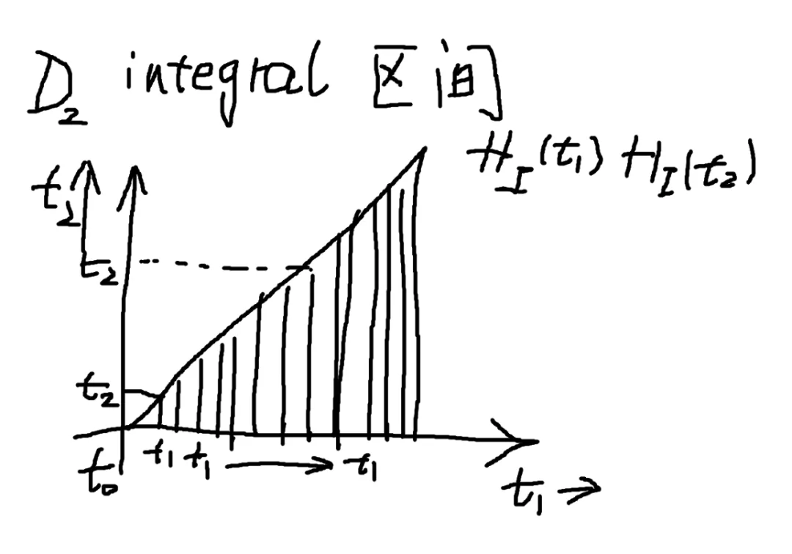
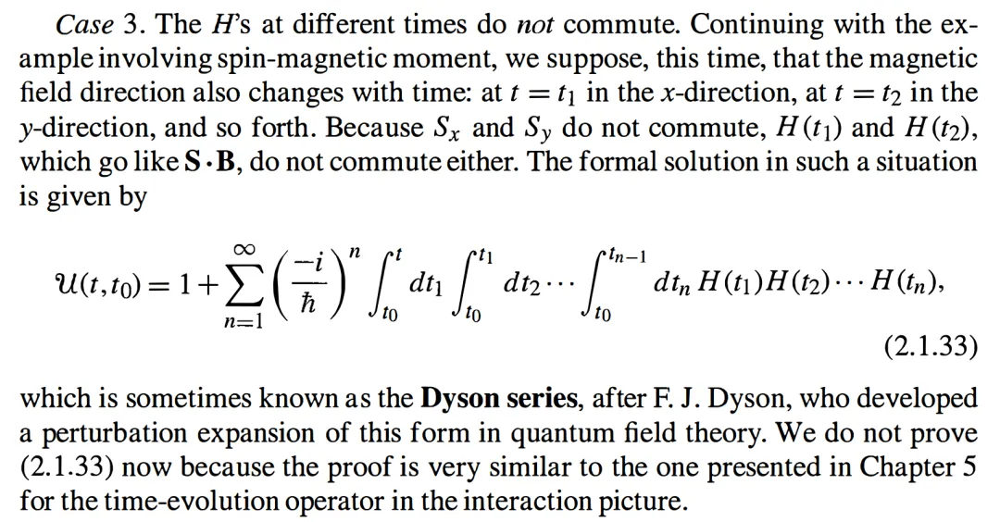

Magnus 级数与 Dyson 级数的导出
1. 相互作用绘景
本文采用自然单位制，$\hbar =1$。本文仅导出这两个级数，未对其物理意义作过多说明。
回顾薛定谔绘景：态动，算符不动：$\lvert\psi(t)\rangle_S =e^{-iH(t-t_0)}\lvert\psi(t_0)\rangle_S$，$e^{-iH(t-t_0)}$ 就是时间演化算符。
海森堡绘景：算符动，态不动：$O_H(t) =e^{iH(t-t_0)}O_Se^{-iH(t-t_0)}$，态的变化是$\lvert\psi\rangle_H=e^{iH(t-t_0)}\lvert\psi(t)\rangle_S=\lvert\psi(t_0)\rangle_S$（转回去）。
相互作用绘景，就是把哈密顿量 $H$ 写成以下形式： $H = H_0 + H_{int}$ 其中 $H_0$ 不含时，$H_{int}$ 为相互作用项。仿照海森堡绘景，相互作用绘景和薛定谔绘景的关系是： $\lvert\psi(t)\rangle_I=e^{iH_0t}\lvert\psi(t)\rangle_S$ 我们这么做的原因是 $H_0$ 不含时。现在我们关心的是态的演化，相互作用绘景的时间演化是如何的？我们把相互作用绘景的时间演化算符记作$U(t,t_0)$ ，下面来求它。
首先，从$t_0$演化到$t$，有： $\lvert\psi(t)\rangle_I = U(t, t_0)\lvert\psi(t_0)\rangle$ 把相互作用的ket统一换成薛定谔绘景的： $e^{iH_0t}\lvert\psi(t)\rangle_S =U(t,t_0) e^{iH_0t_0}\lvert\psi(t_0)\rangle_S$ 左乘$e^{-iH_0t}$： $\lvert\psi(t)\rangle_S= e^{-iH_0t}U(t,t_0)e^{iH_0t_0} \lvert\psi(t_0)\rangle_S$ 代入$\lvert\psi(t)\rangle_S =U_S(t,t_0)\lvert\psi(t_0)\rangle_S$，消掉$\lvert\psi(t_0)\rangle_S$，得到： $U_S(t,t_0)= e^{-iH_0t}U(t,t_0)e^{iH_0t_0}$ 我们求出相互作用绘景的时间演化算符，如果$H_{int}$不含时（显含时间时一般需要写成时间排序指数），$U_S(t,t_0)=e^{-i(H_0+H_{int})(t-t_0)}$就是： $U(t,t_0)= e^{iH_0t}e^{-i(H_0+H_{int})(t-t_0)}e^{-iH_0t_0}$ 之所以这么长，是因为$[H_0,H_{int}]\ne 0$，否则它就会变回$e^{-iH_{int}(t-t_0)}$的形式，QFT就会简单得多。
如果$H_{int}$含时，那么还需要考虑不同时刻的$H_{int}$是否对易。
我们把求得的时间演化算符代入薛定谔方程： $i\frac{\partial}{\partial t}U_S(t,t_0) = H_S(t)U_S(t,t_0)$ 代入下式，$U(t,t_0)$对时间求导数： $U(t,t_0)=e^{iH_0t}U_S(t,t_0)e^{-iH_0t_0}$ 最后得到： $i\frac{\partial}{\partial t}U(t,t_0) = H_I(t)U(t,t_0)\\ H_I(t)\equiv e^{iH_0t}H_{\mathrm{int}}(t)e^{-iH_0t}$
2. Magnus 级数
由于$[H_0,H_{int}]\ne 0$，这个 $H_I$ 指数不好处理，不过我们想到Baker-Hausdorff 引理可以计算这个样子的乘积。

这个式子见于Sakurai 《现代量子力学》，式(2.3.47)： $e^{iG\lambda}Ae^{-iG\lambda} =\sum_{n=0}^{\infty}\frac{(i\lambda)^n}{n!} \underbrace{[G,[G,\ldots,[G,A]]]}_{n\text{ 个 }G}$ 它的特点是$A$被两个互相共轭的指数夹在一起，我们可以直接算$H_I(t)$： $\begin{aligned} H_I(t) ={}&H_{\mathrm{int}}(t) +it[H_0,H_{\mathrm{int}}(t)]\\ &+\frac{(it)^2}{2!} [H_0,[H_0,H_{\mathrm{int}}(t)]]+\cdots \end{aligned}$ 这告诉我们，相互作用绘景哈密顿量的时间依赖可以表示为一系列嵌套对易子。下面我们尝试来求$U(t,t_0)$。
上一节写到： $i\frac{\partial}{\partial t}U(t,t_0) = H_I(t)U(t,t_0)$ 我们记$A(t)=-iH_I(t)$，上式变为： $\frac{dU}{dt}=A(t)U$ 时间演化算符是幺正的，我们设一个试解，它有如下的形式： $U(t,t_0)=e^{\Omega(t)}$ 它的时间演化为： $\frac{d}{dt}e^{\Omega(t)}=A(t)e^{\Omega(t)}$ 但是现在问题是，这个式子的左边不能写成$\dot \Omega e^\Omega$，因为$\Omega$是个矩阵（在表示下），有：
其中平方项的导数是
而不一定是 $2\Omega\dot\Omega$。一般而言$[\dot \Omega, \Omega] \ne0$。
矩阵指数的导数（证明参考：arXiv:0810.5488，Lemma 2，以及scipp-legacy.pbsci.ucsc.edu/~haber/webpage/MatrixExpLog.pdf）由下式计算：
$\frac{d}{dt}e^\Omega
=
\int_0^1 ds\,
e^{s\Omega}\dot\Omega e^{(1-s)\Omega}$
在这个公式的右边乘上 (e^{-\Omega})：
$A(t)=\left(\frac{d}{dt}e^\Omega\right)e^{-\Omega} = \int_0^1 ds\,e^{s\Omega}\dot\Omega e^{-s\Omega}$
注意到右边有$e^{s\Omega}\dot\Omega e^{-s\Omega}$的结构，正好可以用前面的BH引理，代入得：
$\begin{aligned}
e^{s\Omega}\dot\Omega e^{-s\Omega}
={}&\dot\Omega+s[\Omega,\dot\Omega]\\
&+\frac{s^2}{2!}[\Omega,[\Omega,\dot\Omega]]\\
&+\cdots
\end{aligned}$
代入刚才的积分：
$A(t)=\int_0^1 ds\,\Big( \dot\Omega+s[\Omega,\dot\Omega]+\frac{s^2}{2!}[\Omega,[\Omega,\dot\Omega]] +\cdots\Big)$
这个积分是可以算出来的，利用幂级数的积分：
$\int x^n\,dx=\frac{x^{n+1}}{n+1}+C$
最后算出来得： $A(t)=\dot\Omega +\frac12[\Omega,\dot\Omega] +\frac16[\Omega,[\Omega,\dot\Omega]] +\cdots$ 这个$\Omega(t)$ 可以写成一个级数展开，称作 Magnus 级数（见arXiv:1401.2979）： $\Omega(t)=\sum_{n=1}^\infty\,\Omega_n(t)$
这个级数的好处是可以把前一项代入后一项，后面在 Dyson 级数中也有类似的处理，我们先看它的前几项：
-
保留到一阶： $A(t)=\dot \Omega_1(t)$ 有： $\Omega_1(t)=\int_{t_0}^tdt_1\,A(t_1)$
-
保留到二阶： $A= \dot\Omega_1+\dot\Omega_2 +\frac12[\Omega_1,\dot\Omega_1]$ 由于 $\dot\Omega_1=A$，因此有： $\dot\Omega_2 =-\frac12[\Omega_1,A(t)]$ 代入$\Omega_1(t)$，得到： $\dot\Omega_2 =\frac12\int_{t_0}^{t}dt_1\, [A(t),A(t_1)]$ 对时间积分，注意这里的积分变量是$t_2$了，上下限是$t_0$到$t_1$： $\Omega_2(t)= \frac12\int_{t_0}^{t}dt_1 \int_{t_0}^{t_1}dt_2\, [A(t_1),A(t_2)]$
-
保留到三阶，可以利用 Jacobi 恒等式，整理后的结果是（arXiv:0810.5488，式45）： $\Omega_3(t) ={}\frac16\int_{t_0}^{t}dt_1 \int_{t_0}^{t_1}dt_2 \int_{t_0}^{t_2}dt_3 \left([A(t_1),[A(t_2),A(t_3)]] +[A(t_3),[A(t_2),A(t_1)]]\right)$
回到最初，时间演化算符就可以写成： $U(t,t_0)= \exp\left(\sum_{n=1}^{\infty}\Omega_n(t)\right)$
3. Dyson 级数
换一种思路，我们直接解最初的时间演化方程，不去凑指数的形式： $i\frac{dU(t,t_0)}{dt}=H_I(t)U(t,t_0)$ 直接对这个式子积分，为避免和$U$里的变量与积分上限混淆，把积分变量设成$t_1$: $i\int_{t_0}^tdt_1\,\frac{dU}{dt_1}= \int_{t_0}^tdt_1\,H_I(t_1)U(t_1,t_0)$ $U(t_0,t_0)=1$，有： $U(t,t_0)=1-i\int_{t_0}^{t}dt_1\,H_I(t_1)U(t_1,t_0)$ 我们把$U$解出来了，但是注意到这个式子左右两边都有$U$，我们可以把括号里的$t$换成$t_1$，然后代入右侧： $U(t_1,t_0) =1-i\int_{t_0}^{t_1}dt_2\,H_I(t_2)U(t_2,t_0)$ 代入得： $\begin{aligned} U(t,t_0) &= 1-i\int_{t_0}^{t}dt_1\,H_I(t_1)\\ &\qquad\times\left[ 1-i\int_{t_0}^{t_1}dt_2\, H_I(t_2)U(t_2,t_0) \right]\\ &= 1-i\int_{t_0}^{t}dt_1\,H_I(t_1)\\ &\qquad+(-i)^2 \int_{t_0}^{t}dt_1 \int_{t_0}^{t_1}dt_2\, H_I(t_1)H_I(t_2)U(t_2,t_0) \end{aligned}$ 同理，把$U(t_2)$代入： $\begin{aligned} U(t,t_0) &=1-i\int_{t_0}^{t}dt_1\,H_I(t_1)\\ &\quad+(-i)^2\int_{t_0}^{t}dt_1 \int_{t_0}^{t_1}dt_2\,H_I(t_1)H_I(t_2)\\ &\qquad\times\left[ 1-i\int_{t_0}^{t_2}dt_3\,H_I(t_3)U(t_3,t_0) \right]\\ &=1-i\int_{t_0}^{t}dt_1\,H_I(t_1)\\ &\quad+(-i)^2\int_{t_0}^{t}dt_1 \int_{t_0}^{t_1}dt_2\,H_I(t_1)H_I(t_2)\\ &\quad+(-i)^3\int_{t_0}^{t}dt_1 \int_{t_0}^{t_1}dt_2 \int_{t_0}^{t_2}dt_3\\ &\qquad\times H_I(t_1)H_I(t_2)H_I(t_3)U(t_3,t_0) \end{aligned}$ 迭代$n$次，得到结果为： $\begin{aligned} U(t,t_0)=\sum_{n=0}^{\infty}(-i)^n &\int_{t_0}^{t}dt_1 \int_{t_0}^{t_1}dt_2\cdots\\ &\int_{t_0}^{t_{n-1}}dt_n\, H_I(t_1)\cdots H_I(t_n) \end{aligned}$ 注意这个嵌套的积分上下限满足：$t\ge t_1\ge t_2\ge\cdots\ge t_n\ge t_0$，排序自动出现，时间大的永远在左面，以二阶为例： $D_2= \int_{t_0}^{t}dt_1 \int_{t_0}^{t_1}dt_2\, H_I(t_1)H_I(t_2)$ $t_1 > t_2$，这个积分只覆盖正方形积分区域的一半。

引入时间排序算符$T$： $T[H_I(t_1)H_I(t_2)] = \begin{cases} H_I(t_1)H_I(t_2),&t_1>t_2\\ H_I(t_2)H_I(t_1),&t_2>t_1 \end{cases}$ 如果不管顺序，时间排序后，两个三角形的积分贡献相同，整个正方形可分成两个时间顺序相反的三角形： $\begin{aligned} &\int_{t_0}^{t}dt_1\int_{t_0}^{t}dt_2\, T[H_I(t_1)H_I(t_2)]\\ &=2\int_{t_0}^{t}dt_1\int_{t_0}^{t_1}dt_2\, H_I(t_1)H_I(t_2) \end{aligned}$ （注意：左边的两个积分上下限都是 (t_0) 到 (t)，不是第二个积分到 (t_1)。）
推广到$n$阶，有如下通项： $U(t,t_0)=\sum_{n=0}^{\infty}\frac{(-i)^n}{n!} \int_{t_0}^{t}dt_1\cdots \int_{t_0}^{t}dt_n\, T[H_I(t_1)\cdots H_I(t_n)]$ 利用$e$指数的展开，可以把上式写成如下形式： $U(t,t_0)= T\exp\left(-i\int_{t_0}^{t}dt'\,H_I(t')\right)$ 如果不考虑时间排序，把上式的$T$擦掉，我们发现这就是普通指数形式（参见Sakurai书，式（2.1.32），讨论了几种哈密顿量的形式），但由于不同时刻的哈密顿量一般不对易，普通指数并不一定满足薛定谔方程，所以必须引入时间排序算符。
如此看来，Dyson级数为算符乘积的和，而Magnus级数是一个指数，指数中包含嵌套对易子。一般来说Dyson 展开通常比 Magnus 展开更实用，因为它可以结合 Wick 定理计算，Dyson 级数在有限维量子系统中，对有限时间区间内可积的哈密顿量总是收敛的，而 Magnus 级数不一定收敛（参见：arXiv:0711.2381）。
